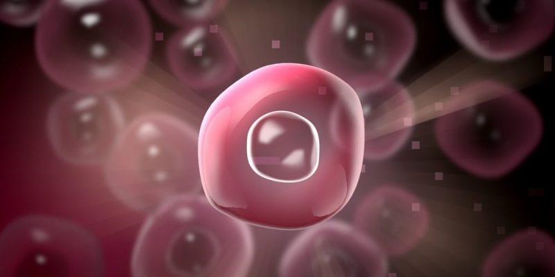
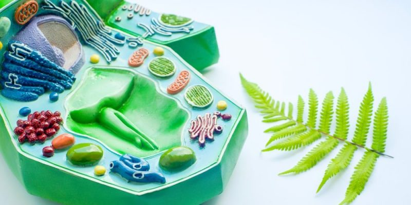
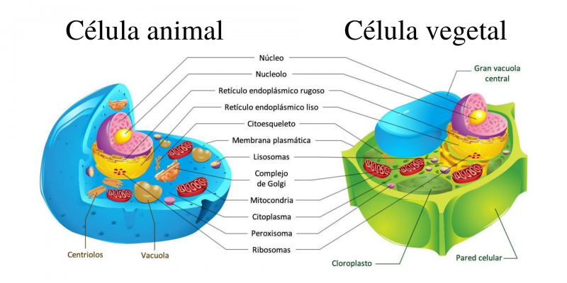
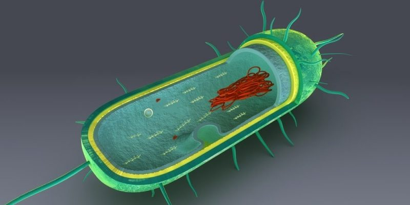

Te explicamos qué es una célula eucariota,
los tipos que existen,
sus partes y funciones. Además,
sus diferencias con una célula procariota.

Las células eucariotas se caracterizan por poseer un núcleo bien definido
¿QUE ES UNA CELULA EUCARIOTA?
Se llama célula eucariota (del vocablo griego eukaryota,
unión de eu “verdadero” y karyon “nuez, núcleo”)
a toda celula tiene un
nucleo
definido.
Este núcleo contiene la mayor parte de su
ADN
y está delimitado por una envoltura nuclear.
Esta es la principal diferencia con respecto a la célula procariota, mucho más primitiva, y cuyo material genético está organizado en el citoplasma en una región llamada “nucleoide”.
El dominio eucariota incluye los reinos Animaliareinos Animalia (animales),
Plantae(plantas),
fungiFungi (hongos) y
Protistas (organismos que no son animales,
ni plantas, ni animales).
Los seres vivos
formados por células eucariotas se denominan eucariontes.
La aparición de las células eucariotas constituyó un paso
importante en la evolucion de la vida
, pues sentó las bases
para una diversidad biológica mucho mayor, incluido el surgimiento de
células especializadas dentro de organizaciones pluricelulares.
La comunidad científica no ha logrado encontrar una
explicación concreta y clara de cómo aparecieron las células eucariotas.
Se han planteado algunas teorías sobre el surgimiento de estas células:
Se cree que las células
eucariotas surgieron debido a la fusión entre una
bacteria
(organismo unicelular
procariota que tiene pared celular de peptidoglicano)
y una archaea (organismo unicelular procariota que
tiene pared celular de glicoproteínas y
proteinas
).Esta es la teoría más aceptada, pues se ha podido
probar que en las células eucariotas algunos
genes
provienen de las bacterias y otros de las archaeas.
En este sentido, el ADN del núcleo de las células
eucariotas es semejante al de las archaeas, mientras
que la composición de la
membrana
y las
mitocondrias
es similar a la de las bacterias.
Se supone que las células eucariotas surgieron a partir
de las archaeas, pero sus similitudes con las bacterias
fueron obtenidas de las proto-mitocondrias (un ancestro
de la mitocondria actual).
Se plantea que los eucariontes y las archaeas surgieron
a partir de una bacteria modificada.
No se conoce bien por qué pasaron mil millones de años desde
que se originaron las células eucariotas hasta que se especializaron.
Se cree que durante este período de tiempo (en el que no hubo
cambio evolutivo) los niveles de oxígeno no eran suficientes
para el desarrollo de los eucariotas.
Celulas Vegetales.Son aquellas celulas que tienen
una pared celular (compuesta de celulosa y proteinas)
que recubre su membrana plasmaticamembrana plasmatica y les otorga rigidez,proteccion y resistencia
.Ademas, las celuias vegetales tienen cloroplastos, que son organelas que contienen la clorofilia
(la biomolecula necesaria para llevar a cabo el proceso de fotosintesis ); y una
vacuola central grande, que mantiene la forma celuiar y controla el almacenamiento y la degradacion de sustacias.
Células animales
. Son aquellas células que no tienen
cloroplastos (ya que no realizan fotosíntesis) ni pared
celular. Pero, a diferencia de las células vegetales,
tienen centríolos (organelas que participan en la división
celular) y presentan vacuolas de menor tamaño, aunque más
abundantes, llamadas vesículas. Debido a la carencia de pared
celular, las células animales pueden adoptar una gran
cantidad de formas.
Células de los hongos.
Son células que se asemejan a las de los animales, aunque difieren de ellas
por la presencia de una pared celular compuesta de quitina.
Células de protistas.
Los protistas son organismos muy variados:
no son animales, plantas ni
hongos pero, a su vez, tienen
características similares a las de todos estos organismos.
Entonces, las células de los protistas son también muy variadas.
Una característica de estas células es que presentan una vacuola
que se contrae, lo que les permitecontrolar la cantidad de agua
en la célula. Además, las células protistas pueden contener
cloroplastos y celulosa.
Funciones vitales de la celula eucariota

Las celulas eucariotas tienen dos funciones primordiales :alimentarse y reproducirse.
Las funciones vitales de la celula eucariota son:
Nutricion.
Es el proceso mediante el cual ocurre la incorporacion
de los nutrientes al interior de la celula. La celula transforma estos nutrientes en otros sustancias, que son utilizadas para formar y reponer las estructuras celulares
y tambien para obtener la energia necesaria para llevar a cabo todas sus funciones. Los organismos pueden clasificarse segun su tipo de nutricion en:
Autotrofos.
Producen las sustancias organicas que necesitan para su desarrollo a partir de sustancias inorganicas.Por ejemplo:Las plantas.
Heterotrofos.
Consumen las sustancias organicas de otros organismos.Por ejemplo: los animales.
Cricimiento.
Implica un aumento en el tamaño
de las células individuales de un organismo,
en el número de células o en ambos. El crecimiento
puede ser uniforme en las diversas partes de
un organismo o puede ser mayor en algunas partes
que en otras, lo que hace que las proporciones
del cuerpo cambien a medida que se produce el
crecimiento.
Respuesta a estímulos
. Las células se relacionan
con el medio que las rodea. Esta relación ocurre
mediante estímulos que generan una respuesta.
Estos estímulos (como cambios de
temperatura,
cambios de acidez, humedad) generan respuestas
en las células que producen distintos efectos
en un organismo (por ejemplo, sudoración,
temblores o contracciones).
Reproducción.
Es el proceso de formación de nuevas
células (o células hijas) a partir de una célula
inicial (o célula madre). Existen dos tipos de
procesos de reproducción celular:
mitosis y
meiosis.
Mediante la mitosis, una célula madre da lugar
a dos células hijas idénticas, es decir, con
la misma cantidad de
material genético
e idéntica información hereditaria.
La mitosis interviene
en los procesos de crecimiento y reparación de
tejido, y en la reproducción de los seres
vivos que se reproducen asexualmente.
Mediante la meiosis,
una célula madre da
lugar a cuatro células hijas genéticamente
distintas entre sí y que además tienen la
mitad del material genético que la célula
inicial. La meiosis se produce para originar
los gametos (células reproductoras, óvulos
y espermatozoides).
Metabolismo.
En las células ocurren
reacciones químicas
que son necesarias para obtener
la energía que permite la realización de las
distintas funciones celulares. En las mitocondrias,
por ejemplo, ocurre la respiración celular, que es
el conjunto de reacciones químicas que degradan
compuestos químicos
(como la glucosa) para generar energía.
Las funciones de metabolismo, crecimiento, respuesta a estímulos
y reproducción son realizadas por todas las células
pertenecientes tanto a organismos procariotas como eucariotas.
Sin embargo, estas no son las únicas funciones celulares:
existen otras funciones según la especialización de cada
tipo de célula y el tejido u organismo que forman.
Por ejemplo, las neuronas (que forman parte del tejido nervioso)
son capaces de comunicarse a través de impulsos eléctricos,
mientras que muchas células del tracto respiratorio
de los animales barren las partículas extrañas en los mocos.
Partes de una celula eucariota

El nucleo celular es un organulo central,
limitada por una doble de menbrana porosa.
Las principales partes de las celulas eucariotas son:
Membrana celular, plasmática o citoplasmática.
Es una membrana que rodea la célula. Está formada
por fosfolípidos y proteínas intercaladas, entre
otros compuestos. La membrana plasmática sirve
para dar forma a la célula, delimita el exterior
y el interior de la célula y regula las sustancias
que entran y salen de ella.
Pared celular.
Es una capa rígida que se encuentra
por fuera de la membrana plasmática y le otorga a
la célula forma, sostén y protección. La pared
celular está presente solo en las
células vegetales
y en las de los hongos, aunque su composición
varía entre ambos tipos celulares: en las plantas
se compone de celulosa y proteínas, mientras que
en los hongos está formada por quitina. Si bien
esta estructura le brinda protección a la célula,
e impide su crecimiento y la limita a
estructuras fijas.
Núcleo celular.
Es un orgánulo central, limitado
por una envoltura porosa que permite el intercambio
de material entre el citoplasma y su interior.
El núcleo contiene el material genético (ADN)
de la célula, que se organiza en
cromosomas.
Además, dentro del núcleo existe una región
especializada llamada nucleolo, donde se
transcribe el ARN ribosomal que luego formará
parte de los ribosomas. El núcleo está
presente en todas las células eucariotas.
Citoplasma.
Es el medio acuoso en el que están
inmersos los distintos orgánulos de la célula.
El citoplasma está formado por el citosol
(que es la parte acuosa que contiene sustancias
disueltas) y los orgánulos (que son estructuras
que tienen distintas funciones especializadas).
En el citoplasma están inmersos los distintos orgánulos
u organelos. Algunos de los principales son:
Lisosomas.
Son vesículas que contienen
enzimas
digestivas, presentes exclusivamente en las células
animales. En los lisosomas se llevan a cabo procesos
de digestión celular, catalizados por las enzimas
que contienen en su interior. Los lisosomas pueden
digerir otro orgánulo para reutilizar sus componentes
individuales por la célula, lo que se denomina
“autofagia”, o también pueden digerir una célula entera,
lo que se denomina “autólisis”. Estos orgánulos se forman
en el aparato de Golgi.
Mitocondrias.
Son las organelas donde se lleva a cabo el
proceso de
respiración celular
. Están rodeadas por una
doble membrana, que sirve como superficie para que ocurran
las reacciones de la respiración celular. Las mitocondrias
están presentes en todos los tipos de células eucariotas
y su número varía en función de las necesidades que tengan:
las células con altos requerimientos energéticos suelen
tener una mayor cantidad de mitocondrias.
Cloroplastos.
Son los organelos en los cuales se lleva
a cabo la fotosíntesis, y presentan un sistema complejo
de membranas. Se componen fundamentalmente de clorofila,
un pigmento verde que participa en el proceso fotosintético
y permite captar la
luz solar. Los cloroplastos son
exclusivos de las células fotosintéticas, por lo que están
presentes en todas las plantas y las algas, cuyo color
verde característico viene dado por la presencia de la
clorofila.
Vacuola
. Es un tipo de vesícula de gran tamaño que almacena
agua ,
sales minerales y otras sustancias, y que se encuentran
solamente en las células vegetales. La vacuola mantiene
la forma celular y le proporciona sostén a la célula,
además de participar en el movimiento intracelular de las
sustancias. Las células animales poseen vacuolas pero de
menor tamaño y en mayor cantidad.
Centríolos. Son estructuras tubulares que se encuentran
exclusivamente en las células animales. Participan en
la separación de los
cromosomas cromosomas durante el proceso de
división celular.
Retículo endoplasmático (RE)
.Es un sistema de membranas que se extiende desde el núcleo celular.
Este orgánulo se divide en dos estructuras:
Retículo endoplasmático rugoso (RER)
.Se ubica a continuación
de la membrana nuclear. En la superficie del RER se encuentran
los ribosomas, que son los orgánulos donde ocurre la síntesis
de proteínas que son utilizadas por otros orgánulos o
exportadas hacia el exterior de la célula.
Retículo endoplasmático liso (REL).
En este orgánulo no se
sintetizan proteínas porque no contiene ribosomas, pero sí
se sintetizan ácidos grasos y esteroides.
Aparato de Golgi.
Es un orgánulo compuesto por un conjunto de discos y
sacos aplanados que se denominan “cisternas”. La función
del aparato de Golgi se relaciona con la modificación y
empaquetamiento de las proteínas y otras biomoléculas
(como hidratos de carbono y lípidos) para su secreción
o transporte.
Ribosomas
. Están formados por dos unidades que se forman
en el nucleolo y se ensamblan en el citoplasma. Son los
orgánulos donde ocurre la síntesis de proteínas.
Centrosoma.
Está presente en células eucariotas de animales.
Este orgánulo está formado por centríolos y material
pericentriolar y es muy importante en el proceso de división
celular.
Citoesqueleto.
Está presente en células eucariotas. Se forma
por microfilamentos compuestos de actina y miosina, por
filamentos intermedios compuestos por queratina y por
microtúbulos compuestos por tubulina. Su función es mantener
la forma de la célula, darle estabilidad mecánica,
contribuir al movimiento de los orgánulos y de la
célula como un todo.
Leucoplastos.
Están presentes en las células eucariotas
de las plantas. Su principal función es participar en
la conversión de azúcares en polisacáridos, grasas y proteínas.
Diferencia entre célula eucariota y célula procariota

Las células procariotas
son más sencillas y pequeñas que las eucariotas.
Las principales diferencias entre las células eucariotas
y las células procariotas son:
Celula Eucariota
Celula Procariota
Precencia del nucleo
El material genético está dentro del núcleo.
El material genético está disperso en el citoplasma, en una región llamada “nucleoide”.
Tipo de ADN
El ADN tiene forma lineal y se encuentra asociado a proteínas, formando la cromatina (o cromosomas, cuando la célula no está en división celular).
Tiene una única molécula de ADN de forma circular. No se asocia a proteínas, por lo que se lo suele denominar “ADN circular y desnudo”.
Tamaño
Son células grandes (10-100 µm)
Son células pequeñas (0,2-2,0 µm)
Reproducción
Presentan tanto reproducción sexual
(por meiosis, dando lugar a los gametos o células sexuales)
comoasexual (por mitosis).
Se reproducen asexualmente (por fisión binaria)
Orgánulos
Presentan orgánulos con membranas y funciones específicas, como las mitocondrias, los lisosomas o los cloroplastos.
Presentan menos orgánulos y no están delimitados por membranas.
Composición del citoesqueleto
Está compuesto por proteínas como actina, miosina, queratina y tubulina.
Está compuesto por la proteína FtsZ, que es similar a la tubulina presente en las células eucariotas.